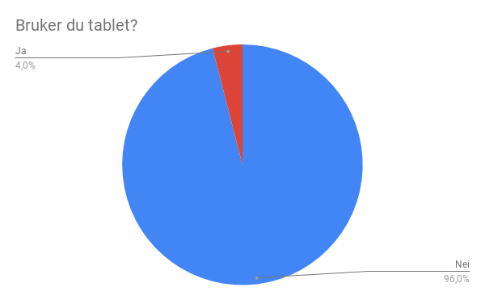
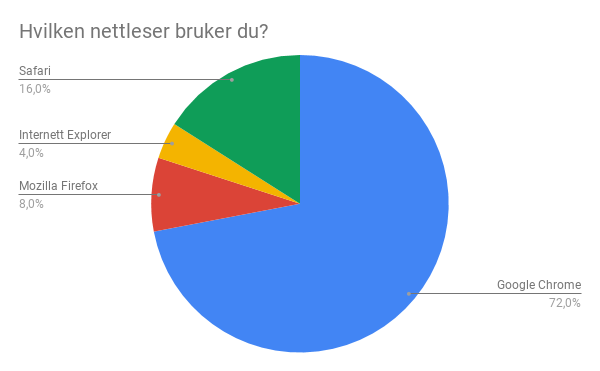
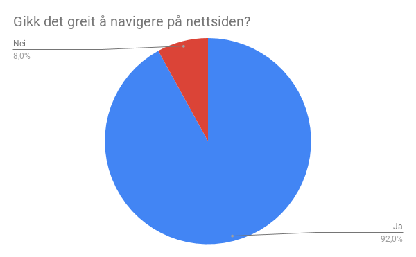
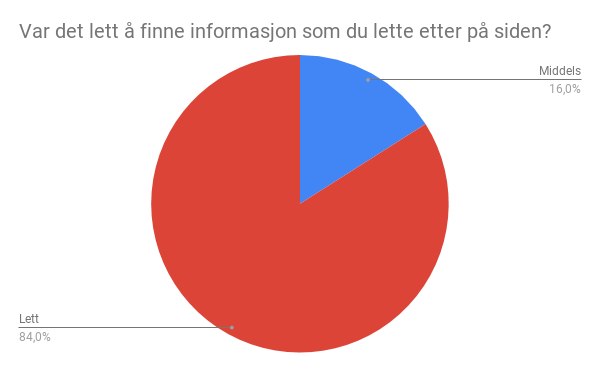
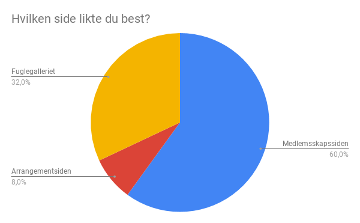
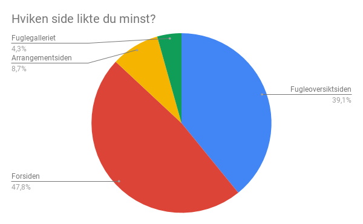
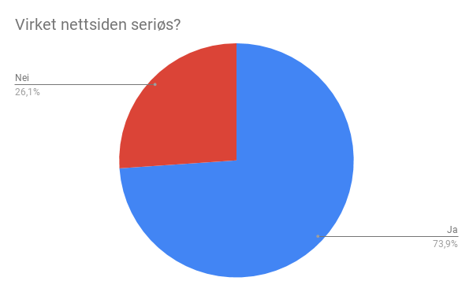

Laget av groupe 31. Liv-Randi Lersveen, Morten André Stenhaug Mikalsen, Mikal Bongo Norvoll, Aksel Saugestad, Fredrik Pettersen Moren.
11.11.18
Vi har en falsk klient "Norske Fugletittere". Dette er en oppdiktet organisasjon med tilholdssted i Trondheim.
Vi lagde en spørreundersøkelse som starter med spørsmål sentrert rundt brukeren og hva brukeren ser nettsiden med. Dette gir en bedre mulighet til å sammenligne opplevelsen på de forskjellige nettleserene og mobilbrukere. Videre så stiller vi spørsmål rettet mot hvordan de oppfatter siden og ber dem forklare hva som burde blitt gjort annerledes, og hva som de potensielt slet med på siden.
For å finne noen til å teste siden så gikk vi til venner og familie, hvor vi til stor del ga de spørreundersøkelsen for å få tilbakemelding, men vi fikk ogaså til å ha noen live testing med venner fra samme hybeler. Vi fikk i alt testet live og gjennom undersøkelsen 31 personer, hvor 22 av dem var i 18-22 aldersgruppen, mens 9 var 22+. 6 av personene var live-testet, og 25 personer svarte på undersøkelsen. Av live testingen så fikk mye lik tilbakemelding som i spørreundersøkelsen, hvor det ikke var så mye problemer med oversiktligheten til nettsiden, men hvor det virket som deler av nettsiden manglet litt tekst.
 
En generell kritikk som gikk igjen både i undersøkelsen og i live testingen var at det ikke var så mye førende tekst som viste hvor ting var bortsett fra bar-en på toppen av siden. En mer spesifikk kritikk vi fikk ved live testing var at det burde være en tilbake knapp på arrangement og fulgeoversikt sidene. Noe annet som ble nevnt var ønsket om muligheten til å bla mellom bilder i slideshowet. På den andre siden så var det positive tilbakemeldinger på oppsettet på siden, og at siden virket relativt seriøs.     
Det åpenbare som vi har lært mye om er hvordan å bruke HTML CSS og Javascript, samt hvorman bør lete etter informasjon hvis man ikke vet hvordan man skal gjøre noe, eller man ikke vet hva man har gjort feil. I tillegg så har størrelsen på prosjektet gjort at vi i mye høyere grad forstår hvor viktig planlegging og tydelig kommunikasjon er. Spesielt i starten av prosjektet så jobbet vi ganske separat, men det forbedret seg og vi innså hvor mye enklere det er å jobbe når man har noen ved siden av seg som du kan spørre istedet for å holde på i timer med et lite problem.